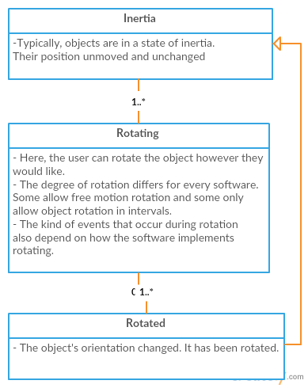
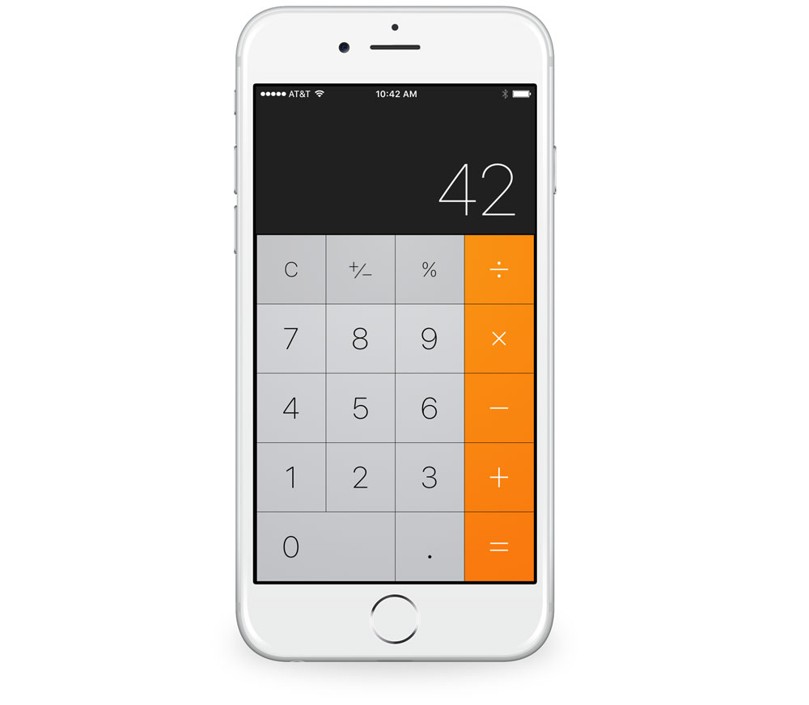
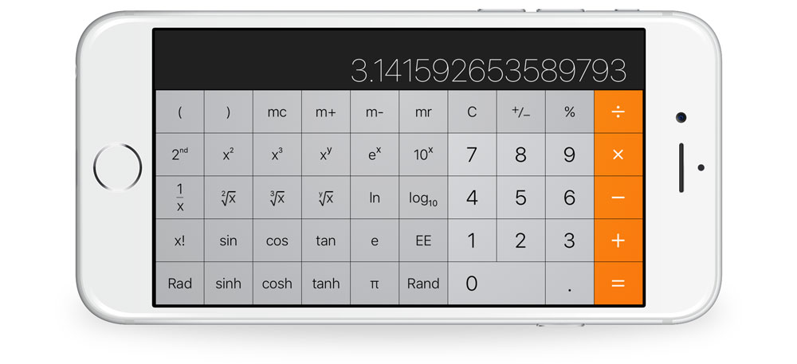
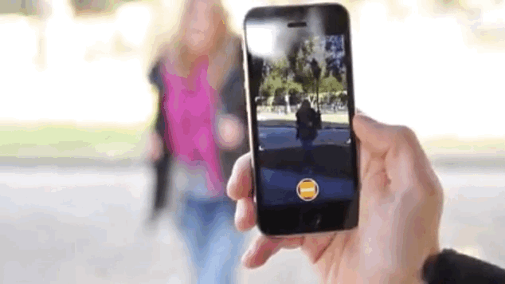

Rotating allows for manipulation of single applications and media between portrait and landscape modes, often unlocking a new user interface and access to landscape-specific features.
Appearance generally differs. For operating systems like OS X and Windows, rotating the display screen is done through a drop down menu. For software like Preview and word processors, it also varies. Some objects are rotated through a button or an icon. Nevertheless, both styles are indicative enough to exemplify rotation.
Rotating is widely known and applied to objects in order to change their orientation or move in a circle-like motion around their center of mass. The flexibility of rotation surely enough differs from object to object. Depending on the software, some objects can rotate by fixed amounts, such as intervals of 90 degrees, and some can precisely rotate from 0 to 360 degrees.
Depending on the OS and software being used, rotating can be performed through multiple ways, such as buttons and swiping. Therefore, the events overlap with other events that pertain to different user interface components.
When rotating is done through buttons, a click event occurs. Other events include click and drag , which usually allows the user to rotate an object however they would like as done with word processing applications and Mac's 'Grapher' application. Though there are multiple ways to perform rotating, ultimately, a rotate event occurs and indicates that an object was rotated.
On iOS, rotation and accelerometer movement is measured by: x, y, z, pitch, roll, and yaw. These can be defined as follows:
x, y, z: Rotations about the x, y, and z axis.pitch: Face up or face down rotating about an axis running from each side of the device.roll: Rotation about an axis from the top of the phone to the bottom side.yaw: Rotation from either side of the device to the top or bottom.The following diagram shows the three states an object undergoes during rotation. This is only applicable to OSes and software that supports rotation for 2D and/or 3D objects.

Rotation is used to multiple applications across many different operating systems. Sometimes, it is not very obvious that an element can be manipulated by rotation. Depending on the category of device, the intended rotation method varies. For example, laptop computers often use the trackpad to rotate elements, while mobile phones use an accelerometer, allowing for the entire device to be rotated to manipulate an element.
Talk about the five usability metrics in relation to this component. Not all components will have the same metric priorities. For example:
Because the button is such a fundamental part of virtually every user interface available today, it can be said that all usability metrics are equally important for this component. Users who are seeing a button in a given platform for the first time must not have any issues recognizing it and knowing what to do with it (learnability). The high priority of learnability also implies that memorability is a given.
Users must also never experience undue delays with using a button (efficiency), particularly because using a button almost always involves an instantaneous, immediate-result action. Users should almost never trigger a button by mistake (errors)—especially buttons whose actions result in significant changes to data or the real world.
If any metric at all can be considered as a “low priority” for buttons, it would be satisfaction. The button is such a utilitarian component that “fun” or “enjoyment” is hardly associated with its use. One exception to this prioritization may be for buttons in applications whose primary metric is satisfaction (e.g., games, entertainment). As a part of that overall system, making buttons “fun” may then become more important than in other situations.
Because the functionality of rotating is dependent on other components like buttons, its key characteristics intersect with those other components.
An important interaction design principle that encloses rotating, is the concept of feedback and communication. Whenever a rotation occurs:
The buttons used and techniques used for rotating objects, need to be familiar to the user. This way, the user can easily work their way around the functionality of rotating because of being familiar with it beforehand. The rotation components of OSes and applications do not have to look the same. Rather, they mustn't force their users to learn news of rotations; memorability is an important aspect of rotations.
Many times applications will not explicity specify if the application supports landscape mode. Occasionaly, as is the case with many iOS games, applications will only support a landscape mode and not portrait. The biggest indication as to whether an application supports both orientations is a change in User Interface.
An example of this change in UI is the Messages application in iOS 10. Messages changes from the standard conversation view in portrait mode to a handwritten message view in landscape mode.
In landscape mode, the landscape keyboard can also be accessed by pressing the Keyboard button on the bottom-right toolbar.
Here is a video on rotating the display
Rotation is an aspect that varies quite a bit depending on the class of the device. Mobile devices, such as an iOS device, have a lot more functionality when it comes to rotation because of the accelerometer. This component allows many different applications to interact with the current orientation of the device. Because of this added component, there are a lot more things to consider when looking at rotation in iOS devices.
For OSes, specifically OS X, rotation is done differently. Users with mobile devices can rotate the orientation of their UI by physically twisting and turning their hand. OS X does not support this feature. So, direct manipulation is a lot more dominant in iOS. Still, rotation is a primary component used in OS X.
Rotating the display is done through a drop down menu, which is accessed through 'System Preferences' and under 'Displays'. As previously mentioned, their are predominantly two different kinds of rotations: free motion and the othere being done in intervals. In this case, rotations are done in 90 degree intervals. Also, rotating the display changes sense of direction from the cursor. For instance, flipping the display upside down flips the cursor's directions.
A lot of rotations can be done through the use of the trackpad. One instance of this, is through the use of Mac's 'Grapher' application. The user can look at either 2D or 3D mathematical models, and when it comes to 3D ones, the user can freely rotate the graph. This is done by clicking and dragging across the trackpad.
Another form of rotating can be done by clicking buttons that are indicative of doing so. Image applications like 'Preview' support this feature. This can also be done by accessing the 'Tools' tab which brings up a drop down menu. However, free motion rotation is not supported; only 90 degree rotation intervals are.
The accelerometer is used to determine whether to display the user interface as portrait or landscape mode. Applications often have a user interface specifically for landscape mode, or at least have relevant elements change to recognize the user is in landscape mode. This can be disabled by navigating to Control Center and pressing the Orientation Lock icon. This will disable all use of the accelerometer, thus disabling all rotation function in iOS.
In iOS, rather than using a trackpad to manipulate elements, iOS devices can be physically rotated to switch between orientations. Single elements in some applications, such as photos, can be rotated either by rotating the device or using a pinch with two fingers.
In iOS 9, Apple added a Parallax Effect feature to the iOS homescreen and lockscreen. This allows the user's wallpaper to be manipulated by the orientation of their device to give a 3-dimensional effect to the wallpaper. This feature can be disabled by navigating to Settings > General > Accessibility > Reduce Motion.
iOS applications can have separate user interfaces for portrait and landscape modes. An example of this is iOS' native Calculator application. Calculator changes from a simple calculator in portrait mode to a full-featured scientific calculator when the device is rotated.
 However, not all iOS applications feature UI changes in landscape mode. For example, many camera applications recognize orientation changes and automatically prepare the camera for taking a landscape photo. Though this has minimal user interface changes, rotation is still being used in this instance.
Many applications are intended for use only in portrait mode, and have no support for landscape viewing.
Mac OSX Lion | Easter Egg | Screen Rotation. Dir. David Bell. Youtube. N.p., 7 Apr. 2012. Web. 15 Oct. 2016.